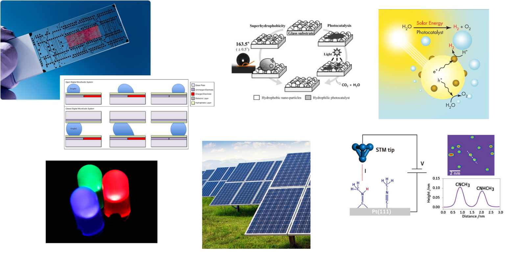

CP535: Molecular and interfacial science
L Lue
Department of Chemical and Process Engineering
University of Strathclyde
Future directions in chemical engineering

Topics
Interfacial science
Microscopic dynamics
Statistical mechanics
Electronic properties of materials
Overview
Module leader: Leo Lue
Demonstrator: Chris Boyle
Lectures / Q&A sessions:
Tuesday 15.00–16.00 (weeks 1–10)
Friday 11.00–12.00 (weeks 1–10)
Tutorials: Tuesday 16.00–17.00 (weeks 1–10)
Module review:
Tuesday 13.00-15.00 (week 11)
Friday 11.00–12.00 (week 11)
Tentative schedule
Week 1: Surfaces and interfaces
Week 2: Solid interfaces
Week 3: Microscopic dynamics
Week 4: Statistical mechanics
Week 5: Ideal gases and kinetic theory
Week 6: Adsorption
Week 7: Quantum systems
Week 8: Electronic properties of materials
Week 9: Electronic devices
Week 10: Catalysis
Week 11: Module review
Components of assessment
component
weight
format
time
final exam
70%
2 hours
December exam
coursework 1
15%
peer assessment (80%/20%)
week 5
coursework 2
15%
peer assessment (80%/20%)
week 10
Review materials
CP203: Thermodynamics and Chemical Principles
intermolecular forces / electron energy levels
thermodynamics / combined first and second laws
CP204: Fluid Flow and Heat Transfer
mechanics: force, momentum
differential balances
CP207: Process Analysis and Statistics
probability distributions / mean / expectation value
correlations / standard deviation
MM211: Mathematics 3B
calculus
differential equations
Questions?
If you have any questions, please email me at leo.lue@strath.ac.uk.